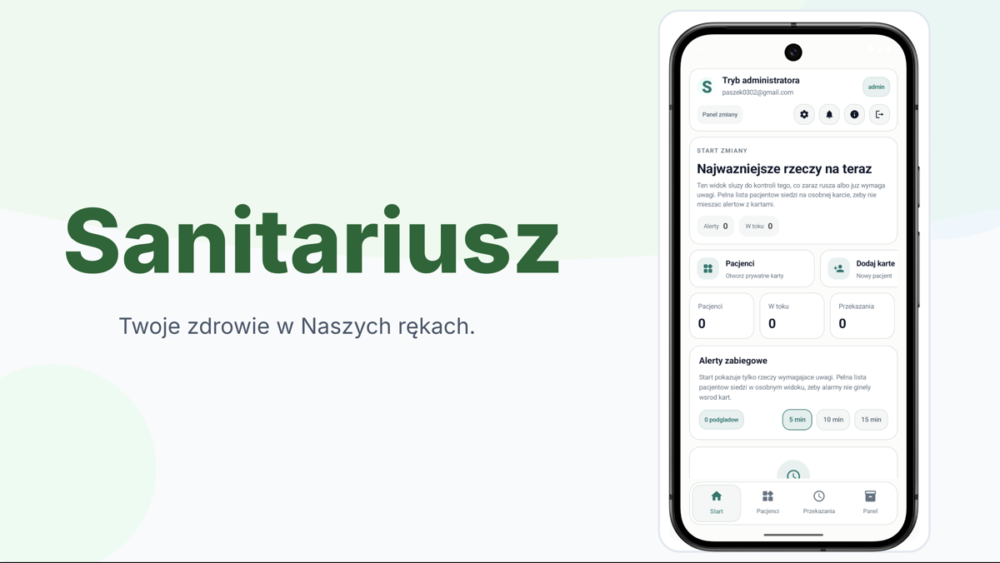
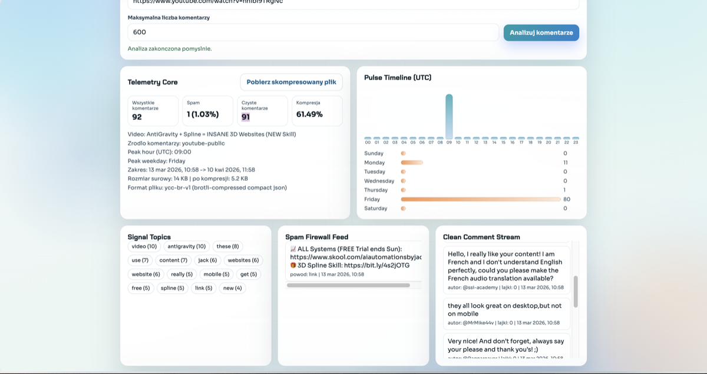

Programming Languages
Python, Java, C++, SQL, HTML, CSS.
Software Developer
I am a software developer and Computer Science student with professional experience in cloud support. I enjoy creating practical applications, exploring cloud technologies such as Microsoft Azure and Kubernetes, and using AI tools to build solutions that improve everyday work and life.
Cloud
Azure, Kubernetes, CI/CD basics
AI
Tools, workflows, practical use cases
Apps
Web and cross-platform mobile projects
About
I currently work as a Cloud Support Engineer at SAP, supporting production environments by troubleshooting issues, analyzing logs, and helping maintain system stability.
I am also completing a Computer Science engineer degree at the Silesian University of Technology in Gliwice. My main interests are cloud technologies, AI technologies and tools, and building practical software that solves real problems in a clear and useful way.
In my own projects, I focus on web and mobile applications, AI-assisted analysis, and tools that help improve everyday work and life.
Skills
Python, Java, C++, SQL, HTML, CSS.
Microsoft Azure, Kubernetes, CI/CD basics, automation.
Log analysis, incident investigation, root cause analysis, and maintaining system stability in production environments.
Android Studio, GitHub, XAMPP, VS Code, Visual Studio, PyCharm, CLion, IntelliJ IDEA.
Quick adaptation to new technologies, communication, problem-solving, teamwork, time management.
Eager to learn new technologies and actively expand knowledge.
Education
Computer Science engineer degree, 2023 - present (2027).
2019 - 2023.
INF 03: Web & database development and administration. INF 04: Application design and programming.
AZ-900 Certificate in progress. Udemy courses: Java, Python.
Projects

Kotlin Multiplatform, Compose Multiplatform, Firebase Firestore, Android, iOS
A cross-platform mobile application built for a health resort to support daily patient-care operations. The current version provides medical staff with a unified workspace for managing patient records, tracking treatment procedures, coordinating shift handovers, and synchronizing updates across devices.
Role-based patient management, cross-device synchronization with Firebase, and administrative oversight for staff data and patient allocation.

Python, Flask, JavaScript, jQuery, Google GenAI SDK, JSON
A web-based application that analyzes YouTube video comments to extract key insights and trends. It processes comments to identify top and most liked entries, detect common topics, and flag potential spam.
AI-powered insights and Q&A based on comment data, topic detection, trend analysis, and an interactive frontend using JavaScript and jQuery.
Contact